Challenge 01
Richness or scope
The property-thumbnail version felt the most complete, but read like a mini storefront.
I flagged it against the brief, trading visual richness for scope discipline.
Surfacing Dubai and Abu Dhabi investment homes inside Housing.com’s India rent and buy journey, without disrupting it.
In development
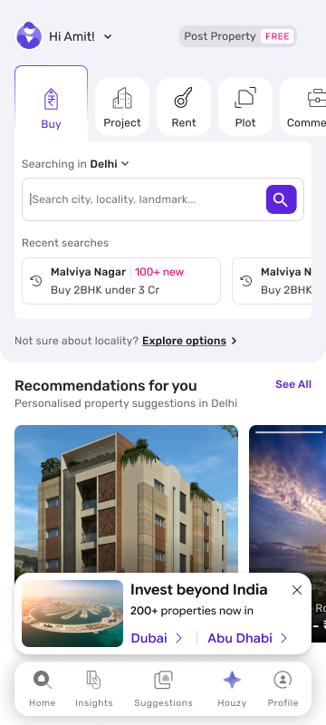
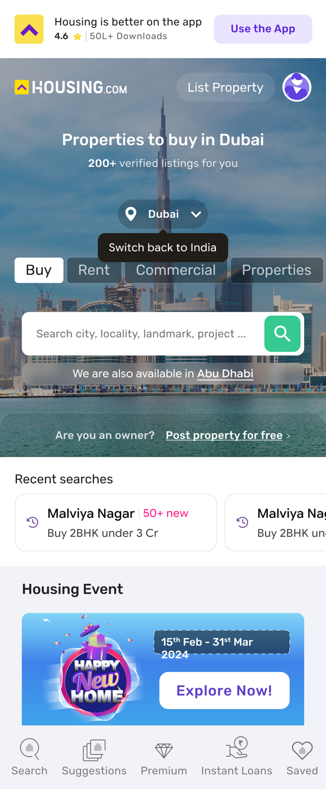
Housing.com lists homes in Dubai and Abu Dhabi. Its users had no way of knowing.
An on-ground UAE team was ready to handle sourcing, viewings and handover. What was missing was a way in. The audience is narrow: most users want a home to live in, and this is for the few with money to invest.
Buy-intent users in tier-1 cities, browsing homes above ₹2.5 Cr: a sign of surplus to invest.
Any user on Home or SRP. Knowing the option exists has value, even without intent to buy.
Dubai and Abu Dhabi homes had no discovery surface on Housing.com.
Add a light discovery layer to Home, search and SRP without disrupting the India journey.
Picked the most visible points in the funnel, then designed a light hook for each.
Hooks across Home, search and SRP, leading into a dedicated flow. Impact will be measured after launch.
Users come to Housing.com to rent or buy in India. A Dubai prompt had to earn their attention without pulling them off that task.
UAE homes earn about twice the gross rental yield of India’s top cities.
International inventory had a single entry point: a small link inside the Home page city menu, easy to miss.
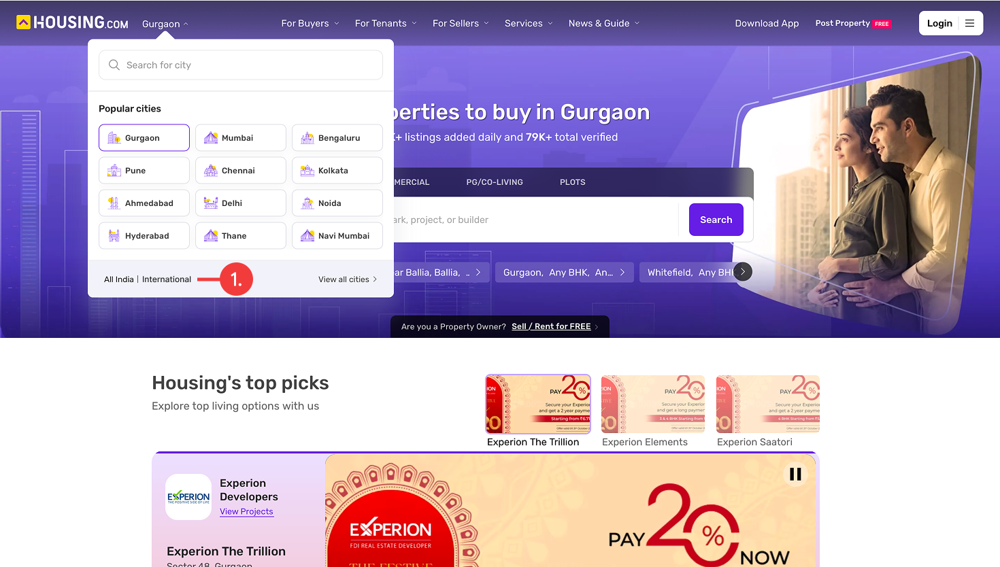
A light card that sits inside the existing journey and routes interested users to a dedicated investor flow.
Three surfaces, each with its own rule, so the hook informs without getting in the way.
Note: Housing.com’s UI is still in transition. This task covered only the hooks, so they sit on top of the existing UI.
The lowest-commitment, highest-reach surface. Two versions:
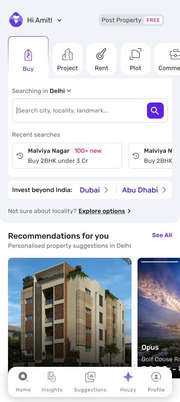
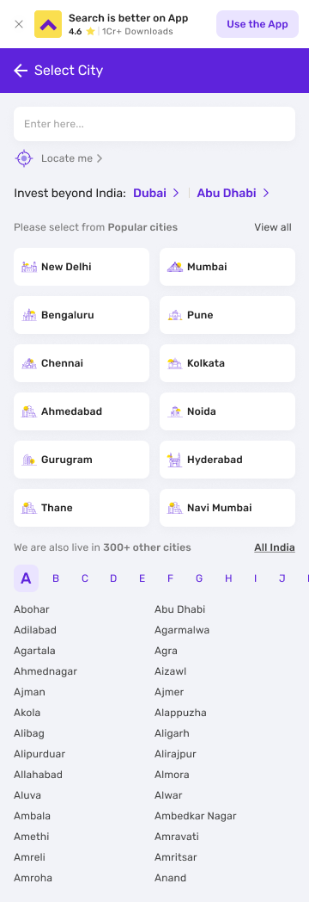
A line above the popular cities, in the same menu where the old link got lost.
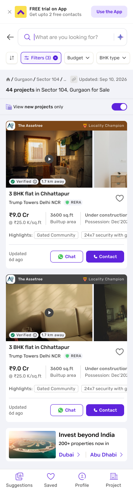
An inline card in the results feed, shown for up to two sessions.
From a one-line strip to a full card, every version shares the same two parts.
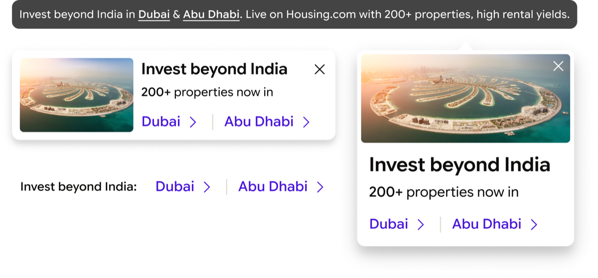
The same line on every surface and size. Users recognise it once and spot it anywhere after.
Dubai and Abu Dhabi get separate links, so users go straight to the market they want, and interest shows up city by city.
Tapping Dubai or Abu Dhabi opens a dedicated flow for that market.
Two small cues run through the flow:
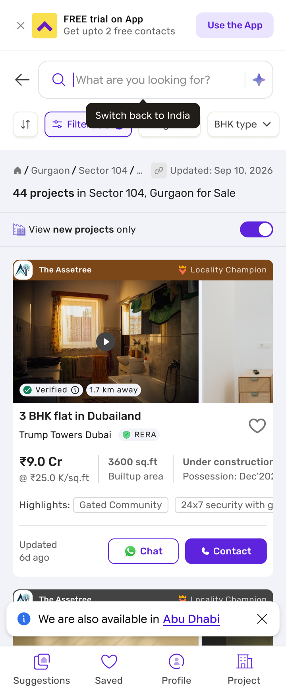
The task came in as a high priority with little time. So I focused on where a hook would be seen most, then kept each one light.
I looked at three places where a hook would be most obvious and visible. Two made it through:
The first screen every user sees, and where the old entry point got lost.
Where users pick a city and scan listings, so a line or a card gets seen.
A nudge on PDPs above ₹2.5 Cr was explored, then rejected before development.
It took several rounds of shapes, sizes and placements to land on the lightest hook that still gets seen.
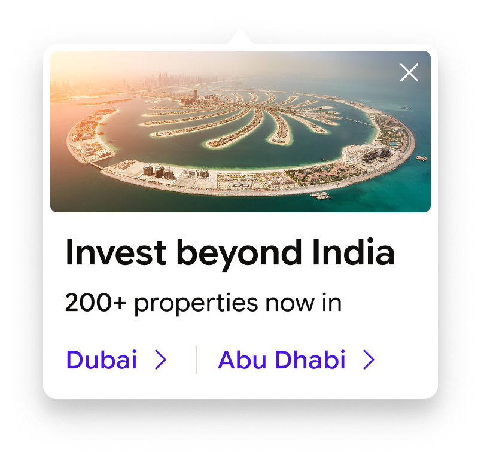
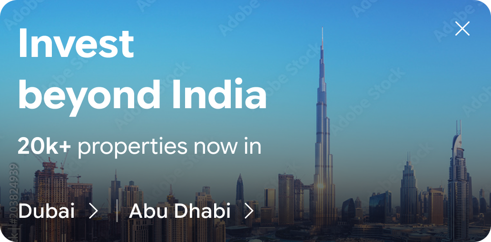
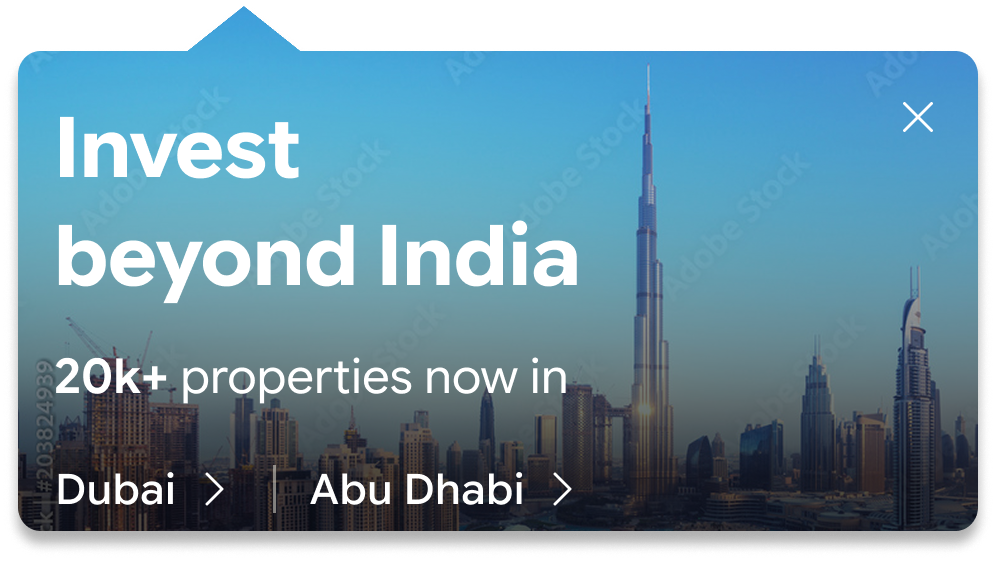
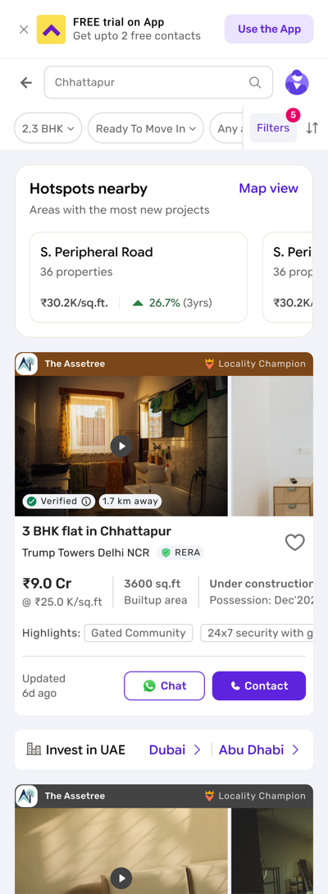
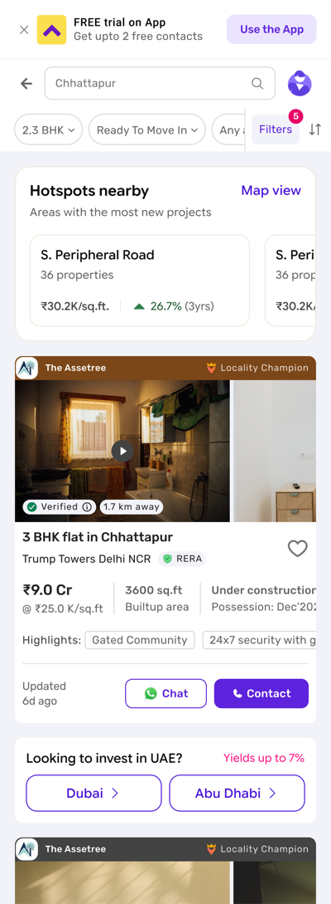
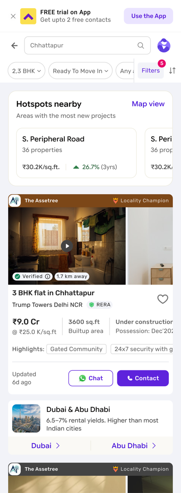
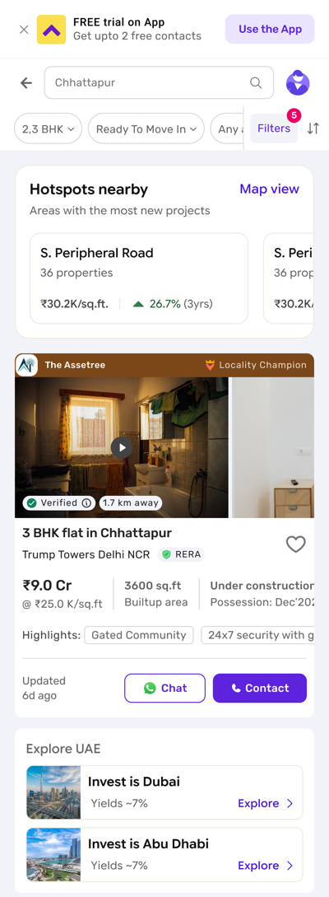
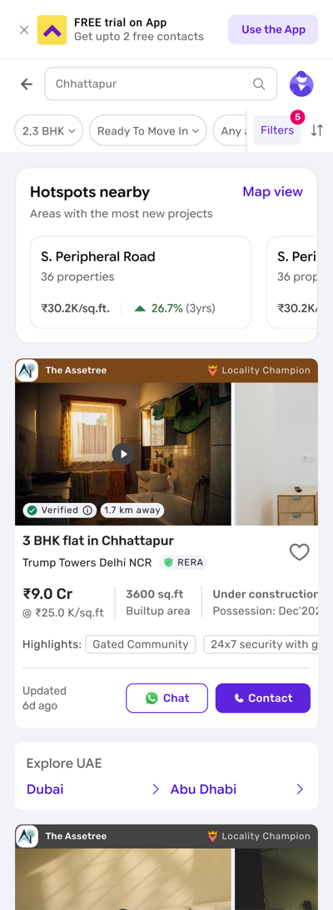
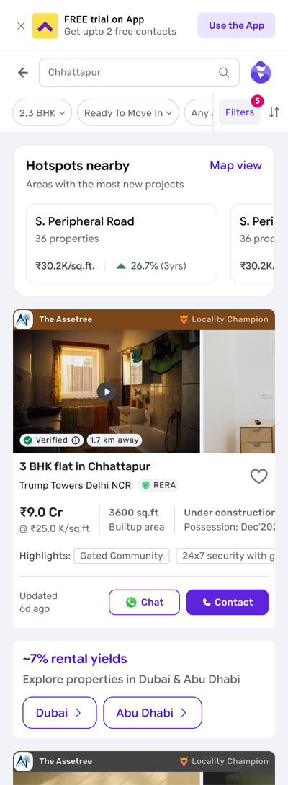
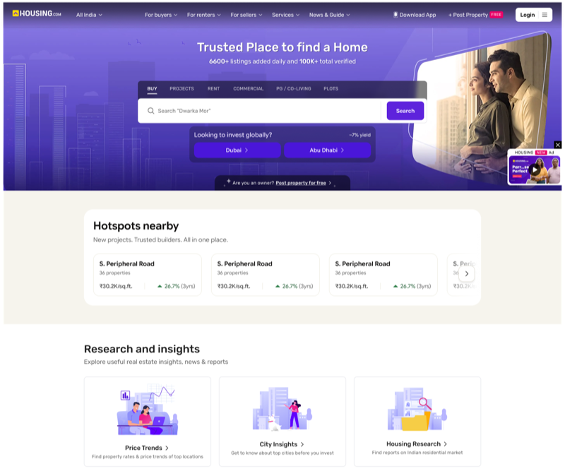
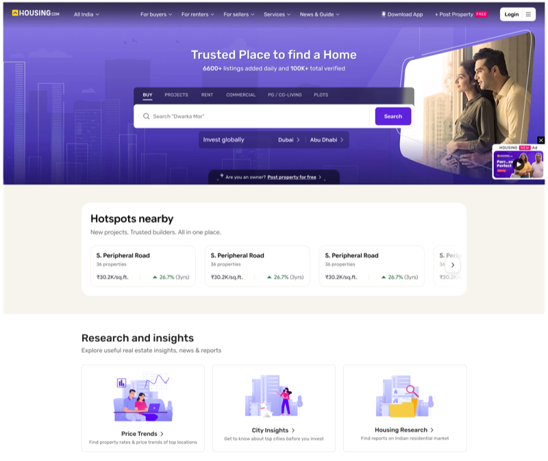
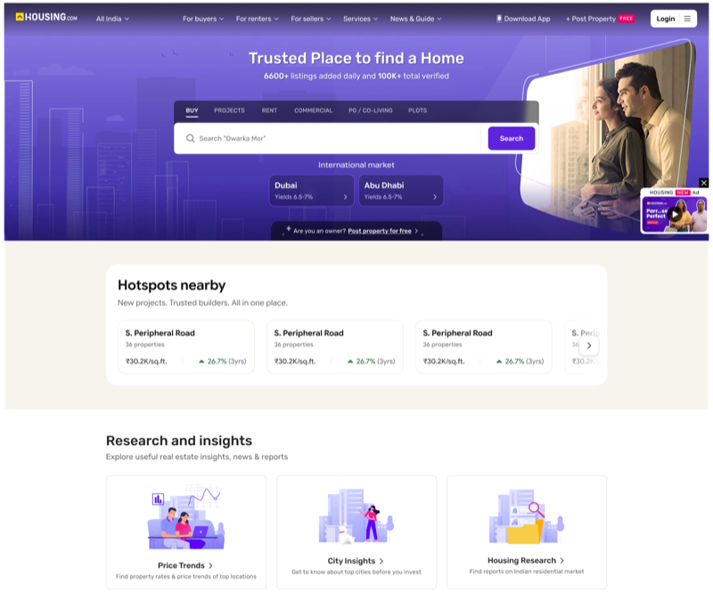
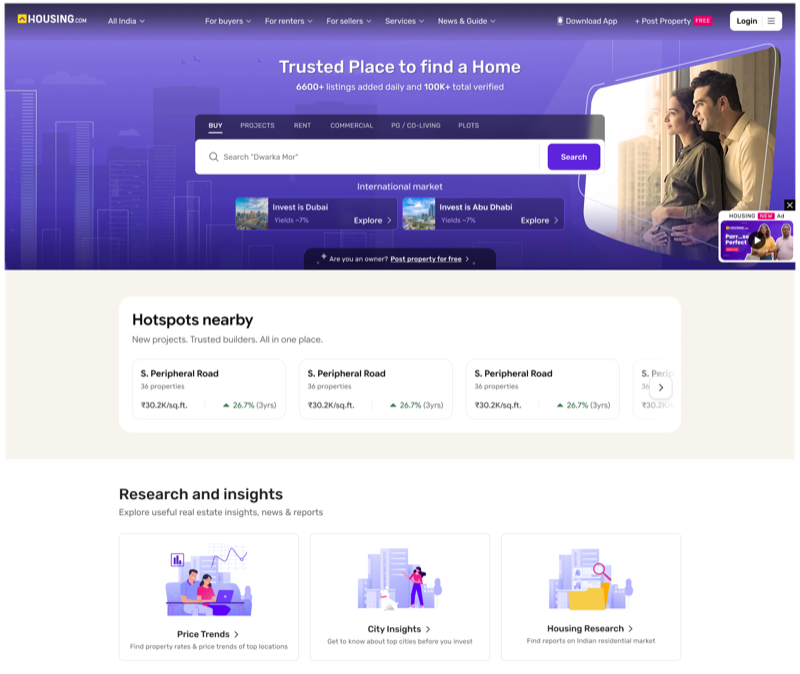
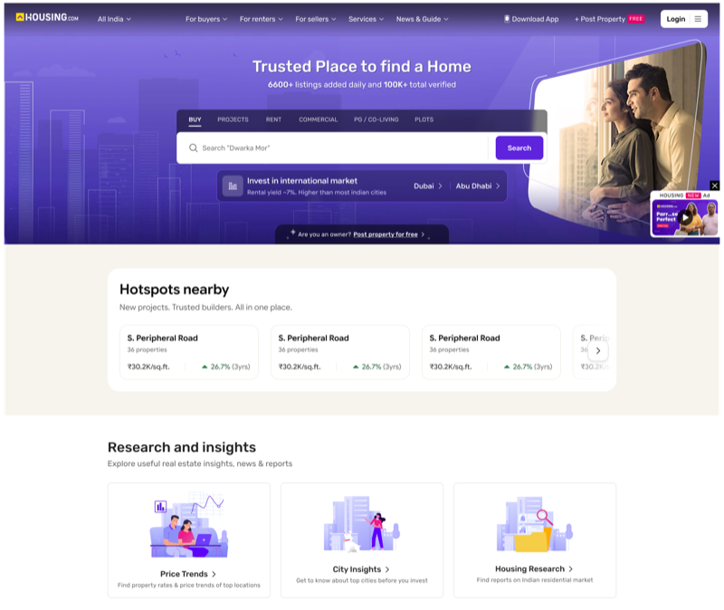
The property-thumbnail version felt the most complete, but read like a mini storefront.
I flagged it against the brief, trading visual richness for scope discipline.
Desktop could have had its own layout and type scale.
It reuses the mobile pattern as is, so the hook reads as one feature across platforms.
The hook and its destination flow are designed, with placement rules set for Home, search and SRP.
Still in development, so impact can’t be measured yet. Results will follow after launch.
With little time, the job was to put the hook where users already look, and keep it from growing.
Choosing where the hook appears did more than perfecting how it looks.
The most complete-looking option was the one most at odds with the brief.
Almost every first-pass mistake looked plausible. Checking the variables caught them.
Lock the details, then launch and measure.
One label, one yield line and one accent colour across every surface.
Desktop, mobile web and Android together, then report results by surface.